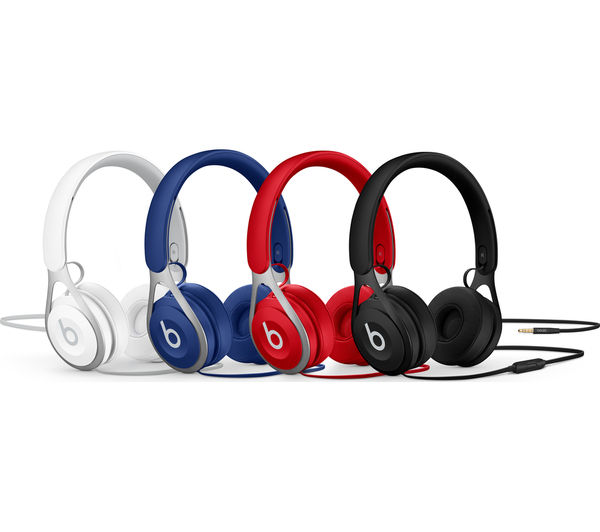
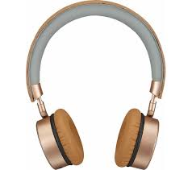
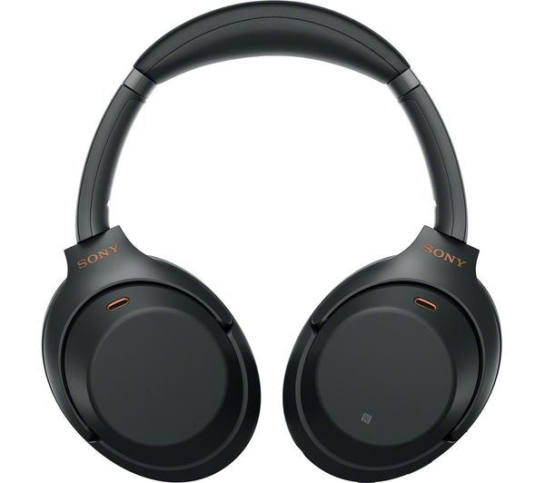
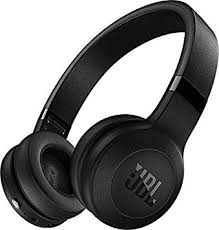

Wearables
Huawei GT2 Watch
Huawei GT2 Watch 42mm

Samsung S3 Frontier

Samsung Watch R810
Samsung Galaxy Active 2
Samsung Galaxy Active
Garmin Vivosport

Garmin VivofitJr
Garmin Forerunner25

Garmin Forerunner35
Garmin Vivoactive3

Vivoactive3 Music
Garmin Vivofit 4

Vivosmart 4
VivomoveHR
Fitbit Charge3

Fitbit InspireHR
Fitbit Ace Kids
Fitbit Ionic

Fitbit Versa

Fitbit VersaLite
Headphones & Earphones

Apple Airpods

Samsung Buds
Huawei Freebuds 3
Huawei Freelace

Beats EP Wireless
Beats Studio3 Wireless

Beats x Wireless
Bose QuietComfort

Goji - The Collection

Sony WH-C700 Wireless

Sony WH1000 XM3

Sony WH-CH500

JBL C45BT